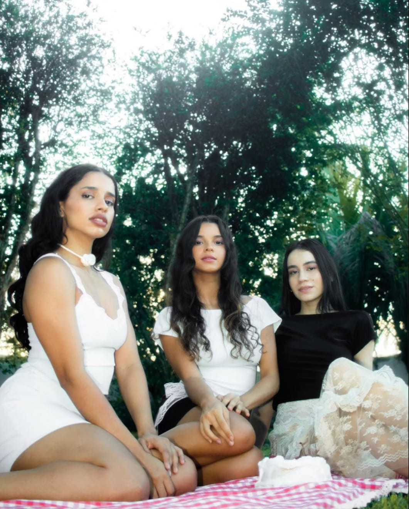
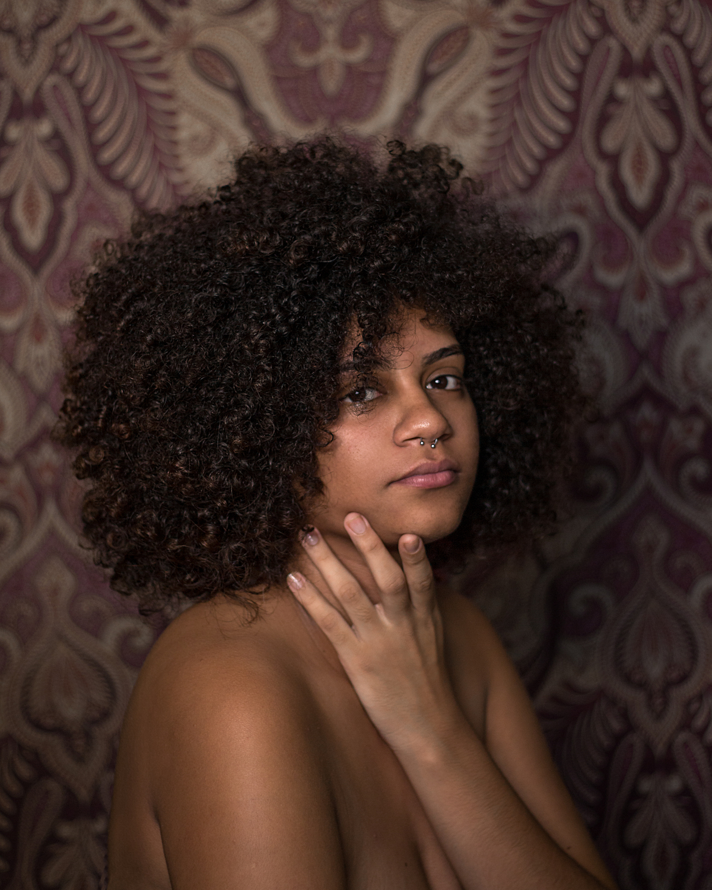
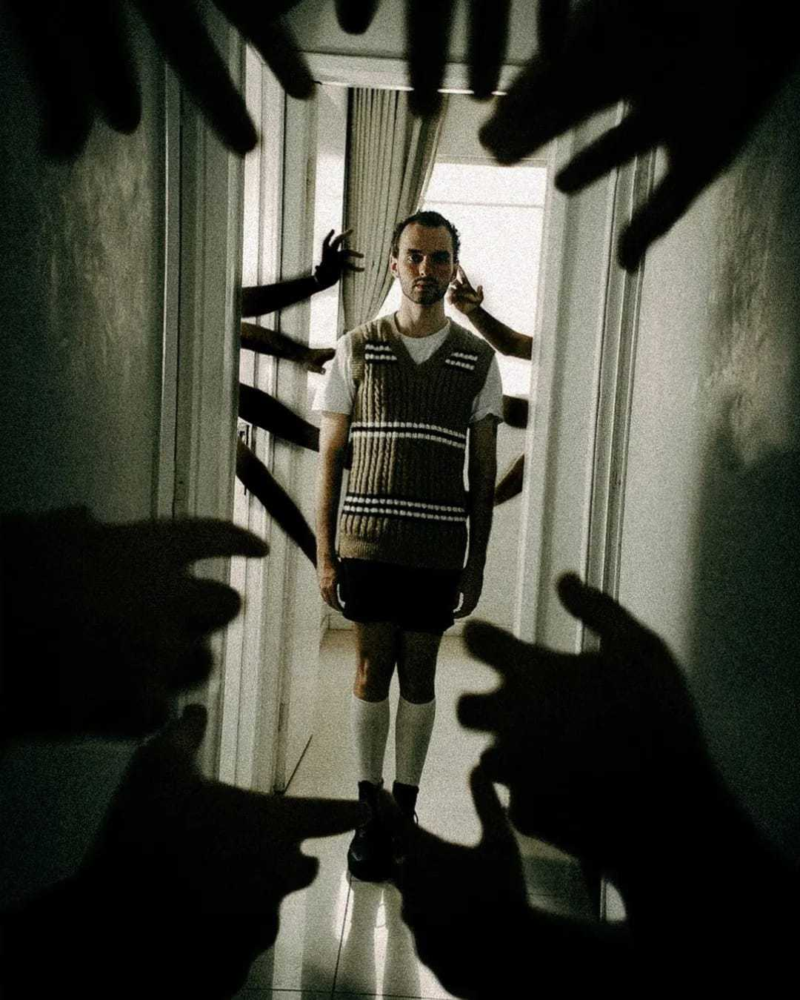
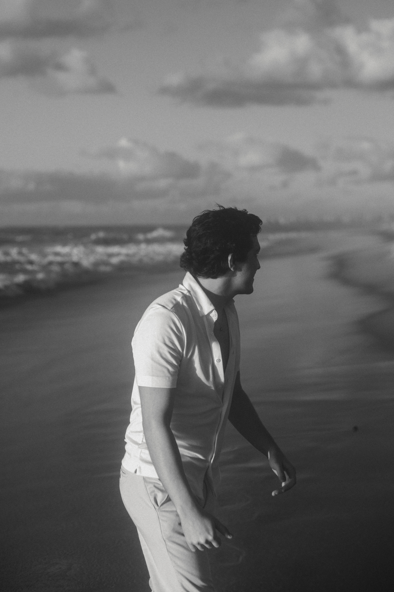
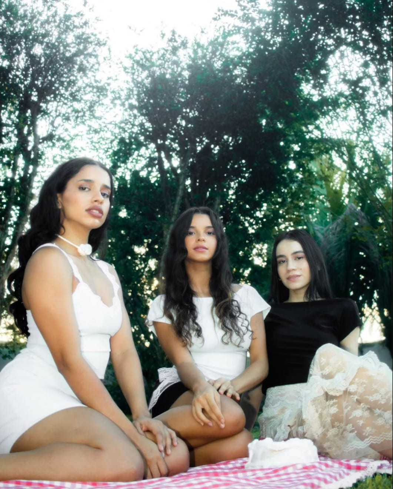
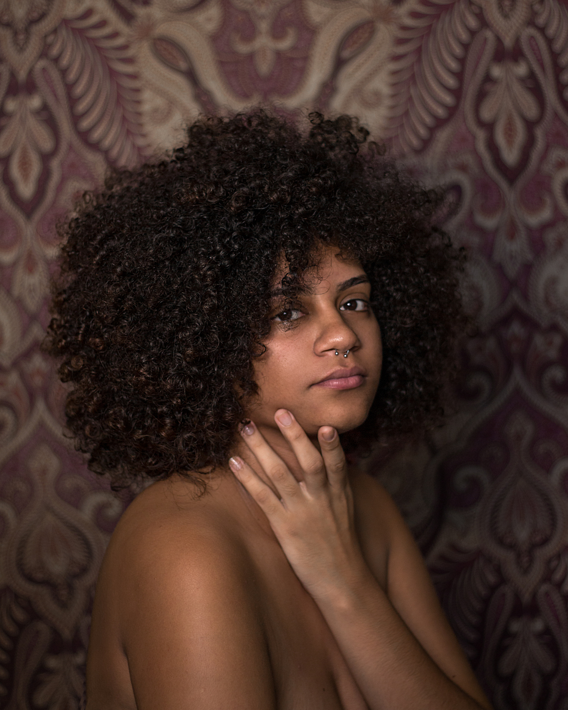
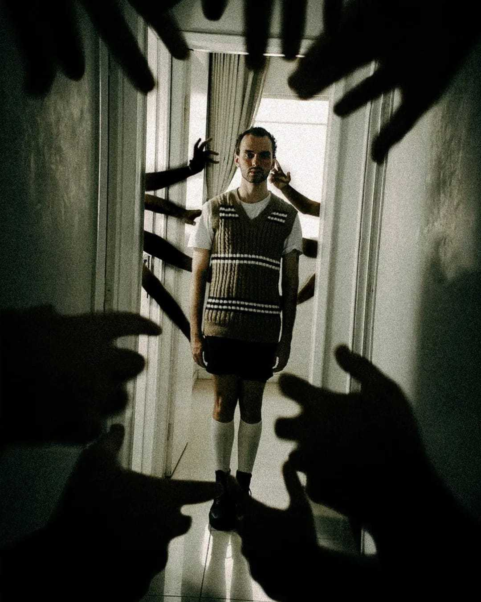
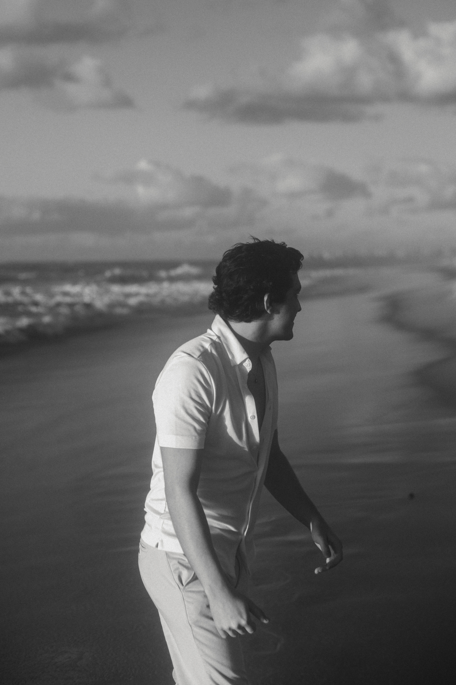

Fotográfos
Jubiraci carlos
1 - Como iniciou sua vida na fotografia e quem foi seu grande incentivador?
Comecei por volta de 2013 e 2014, mas antes mesmo sempre fazia manipulações de imagens no Photoshop. Mas foi com a compra da câmera de um colega que comecei a querer aprender a manuseá-la para poder ajudá-lo. Alguns meses depois consegui comprar minha própria e comecei a utilizar da fotografia formas de me expressar.
2 - Qual sua grande inspiração?
Me inspiro em alguns fotógrafos nacionais que tem um estilo de narrativa que me agrada muito. Johnny Moraes, Marcos Florentino e Kelvin Yule são alguns deles.
3 - Como você enxerga sua arte em nosso estado no futuro?
Quero bastante que a minha arte tenha mais espaço no cenário de moda. Creio que com o passar dos anos as marcas irão entender a importância de comunicar-se de uma forma única das demais.
4 - Qual sua maior paixão?
Ver que consigo ajudar pessoas a se enxergarem de um outro ângulo e reaver a autoestima delas.
5 - Qual das suas fotografias lhe retrata melhor?
Com toda a certeza que “Skin Tones”, que foi a minha primeira fotografia que teve uma ótima repercussão com vários graus de significados importantes para o que eu acredito.
iago januzzi
1 - Como iniciou sua vida na fotografia e quem foi seu grande incentivador?
Minha carreira na fotografia começou, de maneira definitiva, durante a faculdade de Publicidade. Meus pais e amigos sempre estiveram me incentivando.
2 - Qual sua grande inspiração?
Tenho diversas inspirações, algumas delas Hugo Comte, Petra Collins, Cho Giseok.
3 - Como você enxerga sua arte em nosso estado no futuro?
Em algum momento espero conseguir levar, através da fotografia, histórias que se relacionem de alguma maneira com quem as vê.
4 - Qual sua maior paixão?
A liberdade criativa ao elaborar os projetos, construir alusões e afins.
5 - Qual de suas fotografias lhe retrata melhor?
Difícil escolher uma única foto para me definir como todo, mas escolho essa porque foi meu primeiro projeto 100% autoral e que teve um bom reconhecimento: iago januzzi on Instagram: "Best of Photovogue Foto de um dos meus ensaios favoritos, o primeiro que fiz com total liberdade criativa!
Chico Brandão
É um fotógrafo alagoano que iniciou sua carreira na fotografia fazendo incríveis registros de sua esposa, Gal Brandão, hoje, seu braço direito na empresa e uma fotógrafaCom o passar dos anos, Chico foi eleito genuinamente pelo seu público como especialista em Noivas!
Gustavo Sarmento
Alagoas é destaque na fotografia internacional. Com cinco anos de atuação na carreira, o fotógrafo alagoano Gustavo Sarmento tem se destacado em concursos realizados por associações especializadas em fotografias de casamento.
Jorge Fernando Vieira
Natural de Maceió/AL (1965). Dedica-se exclusivamente à Fotografia desde 2015, depois de ter transitado, por vinte e cinco anos, por outras linguagens artísticas, e pela arte-educação. Atua como fotógrafo documentarista e desenvolve projetos autorais no campo da fotografia contemporânea.
Jubiracy Carlos
"Comecei por volta de 2013 e 2014, mas antes mesmo sempre fazia manipulações de imagens no Photoshop. Mas foi com a compra da câmera de um colega que comecei a querer aprender a manuseá-la para poder ajudá-lo."
Iago Januzzi
"Minha carreira na fotografia começou, de maneira definitiva, durante a faculdade de Publicidade. Meus pais e amigos sempre estiveram me incentivando."